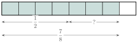
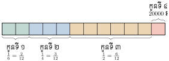

- បកស្រាយចំណោទជាប្រភាគនិងប្រភាគស្មើគ្នា
- ប្រៀបធៀប រៀបលំដាប់និងសម្រួលប្រភាគ
- ធ្វើប្រមាណវិធីលើប្រភាគ
- ដោះស្រាយចំណោទដែលទាក់ទងនឹងប្រភាគ ។
1. សញ្ញាណប្រភាគ
គេកាត់នំប៉័ងមួយជា 5 ផ្នែកស្មើៗគ្នាចែកឱ្យក្មេង 5 នាក់ ហើយក្មេងម្នាក់ៗនឹងទទួលបានមួយផ្នែក (មើលរូប) ។
ផ្នែកនីមួយៗស្មើនឹងមួយភាគប្រាំនៃនំ គេសរសេរ \(\displaystyle \frac{1}{5}\) ។
ប្រភាគជាចំនួនមួយដែលគេសរសេរជាផលចែកនៃមួយចំនួន និងមួយចំនួនផ្សេងទៀតខុសពីសូន្យ ។
ប្រភាគ \(\displaystyle \frac{4}{5} \; , \; \frac{-2}{3} \; , \; \frac{3}{-5} \; , \; \frac{-2}{-5} \dots\) ។
\(\displaystyle \frac{a}{b}\) ជាប្រភាគដែល \(\displaystyle a \; , \; b\) ចំនួនគត់រ៉ឺឡាទីប ហើយ \(\displaystyle a\) ជាភាគយក និង \(\displaystyle b\) ជាភាគបែងនៃប្រភាគ (\(\displaystyle b \neq 0\)) ។
2. ប្រភាគស្មើគ្នា
សុខ សៅនិងសំបុត្រ បានទិញនំម្នាក់មួយមានទំហំប៉ុនៗគ្នា ។
សុខកាត់នំជា 3 ចំណែកស្មើៗគ្នា ហើយបានញ៉ាំអស់ 1 ចំណែក ។ គេថាសុខបានញ៉ាំអស់ \(\displaystyle \frac{1}{3}\) នៃនំនោះ ។
សៅកាត់នំជា 6 ចំណែកស្មើៗគ្នា ហើយបានញ៉ាំអស់ 2 ចំណែក ។ គេថាសៅបានញ៉ាំអស់ \(\displaystyle \frac{2}{6}\) នៃនំនោះ ។
សំកាត់នំជា 9 ចំណែកស្មើៗគ្នា ហើយបានញ៉ាំអស់ 3 ចំណែក ។ គេថាសំបានញ៉ាំអស់ \(\displaystyle \frac{3}{9}\) នៃនំនោះ ។
\(\displaystyle \frac{1}{3} \; , \; \frac{2}{6}\) និង \(\displaystyle \frac{3}{9}\) គឺតាងបរិមាណស្មើគ្នា ជាប្រភាគស្មើគ្នា ។
គេសរសេរ \(\displaystyle \frac{1}{3} = \frac{2}{6} = \frac{3}{9}\) ។
គេសម្គាល់ឃើញថា \(\displaystyle \frac{1}{3} = \frac{2}{6}\) ហើយ \(\displaystyle 1 \times 6 = 3 \times 2\) ។
ដូចគ្នាដែរ \(\displaystyle \frac{2}{6} = \frac{3}{9}\) ហើយ \(\displaystyle 2 \times 9 = 6 \times 3\) ។
\(\displaystyle \frac{-3}{4} = \frac{6}{-8}\) ព្រោះ \(\displaystyle (-3) \times (-8) = 4 \times 6 = 24\)
\(\displaystyle \frac{3}{7} \neq \frac{-4}{5}\) ព្រោះ \(\displaystyle 3 \times 5 \neq 7 \times (-4)\) ។
ប្រភាគស្មើគ្នាជាប្រភាគតាងឱ្យបរិមាណស្មើគ្នា ។
បើប្រភាគ \(\displaystyle \frac{a}{b}\) និង \(\displaystyle \frac{c}{d}\) ជាប្រភាគស្មើគ្នា មានន័យថា \(\displaystyle \frac{a}{b} = \frac{c}{d}\) លុះត្រាតែ \(\displaystyle a \times d = b \times c\) ដែល \(\displaystyle b \neq 0 \; , \; d \neq 0\) ។
\(\displaystyle \frac{1}{3} = \frac{1 \times 2}{3 \times 2} = \frac{2}{6} \hspace{2cm} , \hspace{2cm} \frac{2}{6} = \frac{2 \div 2}{6 \div 2} = \frac{1}{3}\)
\(\displaystyle \frac{3}{-5} = \frac{3 \times (-1)}{(-5)(-1)} = \frac{-3}{5} \hspace{1.2cm} , \hspace{1.2cm} \frac{-3}{9} = \frac{(-3) \div 3}{9 \div 3} = \frac{-1}{3}\) ។
ដូចនេះតម្លៃនៃប្រភាគមិនប្រែប្រួលទេបើគេគុណ ឬចែកភាគយក និងភាគបែងនៃប្រភាគនោះ និងមួយចំនួនខុសពីសូន្យ មានន័យថា \(\displaystyle \frac{a}{b} = \frac{a \times c}{b \times c}\) និង \(\displaystyle \frac{a}{b} = \frac{a \div c}{b \div c}\) ដែល \(\displaystyle c \neq 0\) ។
រកតម្លៃ \(\displaystyle x\) បើគេដឹងថា \(\displaystyle \frac{x}{4} = \frac{21}{28}\) ។
ដោយ \(\displaystyle \frac{x}{4} = \frac{21}{28}\) នោះគេបាន \(\displaystyle x \times 28 = 4 \times 21\) នាំឱ្យ \(\displaystyle x = \frac{4 \times 21}{28} = 3\) ។
ចូរបំពេញចំនួនក្នុងអក្សរ \(\displaystyle \square\) ។
ក. \(\displaystyle \frac{2}{7} = \frac{\square}{\square}\) ខ. \(\displaystyle \frac{-15}{25} = \frac{\square}{\square}\) គ. \(\displaystyle \frac{4}{9} = \frac{28}{\square}\) ។
3. ការសម្រួលប្រភាគ
សម្រួលប្រភាគ \(\displaystyle \frac{6}{15}\) ។
ដោយ 6 និង 15 មានតួចែករួមធំបំផុត 3 នោះ \(\displaystyle \frac{6}{15}\) អាចសរសេរ ៖
\(\displaystyle \frac{6}{15} = \frac{3 \times 2}{3 \times 5} = \frac{2}{5}\) ឬ \(\displaystyle \frac{6}{15} = \frac{6 \div 3}{15 \div 3} = \frac{2}{5}\)
\(\displaystyle \frac{2}{5}\) ជាប្រភាគមិនអាចសម្រួលបាន ហៅថាប្រភាគសម្រេច ។
សម្រួលប្រភាគ គឺធ្វើឱ្យប្រភាគនោះទៅជាប្រភាគសម្រេចមិនអាចសម្រួលបាន ។
សម្រួលប្រភាគអាចធ្វើបានដោយចែកភាគយកនិងភាគបែងនៃប្រភាគនោះ និងតួចែករួមធំបំផុតរបស់វា ។
\(\displaystyle \frac{a}{b}\) ជាប្រភាគហើយ \(\displaystyle k\) ជាតួចែករួមនៃ \(\displaystyle a \; , \; b\) គេបាន \(\displaystyle \frac{ka}{kb} = \frac{a}{b}\) ។
សម្រួលប្រភាគ
ក. \(\displaystyle \frac{16}{40}\) និង \(\displaystyle \frac{70}{245}\) ខ. \(\displaystyle \frac{18}{-33}\) និង \(\displaystyle \frac{-36}{-12}\) ។
ក. \(\displaystyle \frac{16}{40} = \frac{16 \div 8}{40 \div 8} = \frac{2}{5} \quad , \quad \frac{70}{245} = \frac{70 \div 35}{245 \div 35} = \frac{2}{7}\) ។
ខ. \(\displaystyle \frac{18}{-33} = \frac{18 \div 3}{(-33) \div 3} = \frac{6}{-11} \quad , \quad \frac{-36}{-12} = \frac{36}{12} = \frac{36 \div 12}{12 \div 12} = \frac{3}{1} = 3\) ។
សម្រួលប្រភាគ \(\displaystyle \frac{18}{30} \quad , \quad \frac{-19}{57}\) និង \(\displaystyle \frac{-10}{-15}\) ។
4. ការប្រៀបធៀបនិងរៀបលំដាប់ប្រភាគ
ករណីភាគបែងដូចគ្នាគេប្រៀបធៀបតែភាគយក
\(\displaystyle \frac{2}{5} < \frac{4}{5} \quad , \quad \frac{9}{11} > \frac{3}{11} \quad , \quad \frac{-3}{4} < \frac{-1}{4}\) ព្រោះ \(\displaystyle -3 < -1\)
\(\displaystyle \frac{2}{5} > \frac{-4}{5}\) ព្រោះ \(\displaystyle 2 > -4\) ។
ករណីភាគបែងខុសគ្នា គេតម្រូវភាគបែងរួមរួចហើយគេប្រៀបធៀបតែភាគយក ។
ប្រៀបធៀបនិងរៀបប្រភាគ \(\displaystyle \frac{2}{3} \; , \; \frac{1}{2} \; , \; \frac{3}{8}\) និង \(\displaystyle \frac{5}{6}\) តាមលំដាប់ចុះ ។
ពហុគុណរួមតូចបំផុតនៃភាគបែង \(\displaystyle 3, 2, 8\) និង \(\displaystyle 6\) ស្មើនឹង \(\displaystyle 24\) ។
បន្ទាប់មកគេប្តូរប្រភាគនីមួយៗទៅជាប្រភាគស្មើគ្នាដែលមានភាគបែងស្មើនឹង 24 ។
\(\displaystyle \frac{2}{3} = \frac{2 \times 8}{3 \times 8} = \frac{16}{24} \hspace{2cm} , \hspace{2cm} \frac{1}{2} = \frac{1 \times 12}{2 \times 12} = \frac{12}{24}\)
\(\displaystyle \frac{3}{8} = \frac{3 \times 3}{8 \times 3} = \frac{9}{24} \hspace{2.2cm} , \hspace{2cm} \frac{5}{6} = \frac{5 \times 4}{6 \times 4} = \frac{20}{24}\)
គេបាន \(\displaystyle \frac{20}{24} > \frac{16}{24} > \frac{12}{24} > \frac{9}{24}\) ។
ដោយរៀបតាមលំដាប់ចុះ គេបាន ៖ \(\displaystyle \frac{5}{6} \; , \; \frac{2}{3} \; , \; \frac{1}{2} \; , \; \frac{3}{8}\) ។
- ដើម្បីប្រៀបធៀបប្រភាគដែលមានភាគបែងដូចគ្នា គេប្រៀបធៀបតែភាគយក ។
- ដើម្បីប្រៀបធៀបប្រភាគដែលមានភាគបែងខុសគ្នា គេត្រូវតម្រូវភាគបែងរួមរួចហើយប្រៀបធៀបភាគយកនិងភាគយក ។
ប្រៀបធៀបនិងរៀបលំដាប់ប្រភាគ \(\displaystyle \frac{11}{12} \; , \; \frac{5}{8} \; , \; \frac{7}{9} \; , \; \frac{3}{4}\) តាមលំដាប់ឡើង ។
ពហុគុណរួមតូចបំផុតនៃ \(\displaystyle 12, 8, 9\) និង \(\displaystyle 4\) ស្មើនឹង \(\displaystyle 72\) ។
\(\displaystyle \frac{11}{12} = \frac{11 \times 6}{12 \times 6} = \frac{66}{72} \hspace{2cm} , \hspace{2cm} \frac{5}{8} = \frac{5 \times 9}{8 \times 9} = \frac{45}{72}\)
\(\displaystyle \frac{7}{9} = \frac{7 \times 8}{9 \times 8} = \frac{56}{72} \hspace{2.2cm} , \hspace{2cm} \frac{3}{4} = \frac{3 \times 18}{4 \times 18} = \frac{54}{72}\)
គេបាន \(\displaystyle \frac{45}{72} < \frac{54}{72} < \frac{56}{72} < \frac{66}{72}\) ។
ដោយរៀបតាមលំដាប់ឡើង គេបាន \(\displaystyle \frac{5}{8} \; , \; \frac{3}{4} \; , \; \frac{7}{9} \; , \; \frac{11}{12}\) ។
ប្រៀបធៀបប្រភាគ \(\displaystyle \frac{-3}{4}\) និង \(\displaystyle \frac{4}{-5}\) ។
ប្រភាគ \(\displaystyle \frac{-3}{4}\) និង \(\displaystyle \frac{4}{-5}\) មានភាគបែងរួមស្មើនឹង \(\displaystyle 20\) ។
គេបាន \(\displaystyle \frac{-3}{4} = \frac{-3(5)}{4 \times 5} = \frac{-15}{20}\) និង \(\displaystyle \frac{4}{-5} = \frac{(-4)(4)}{5 \times 4} = \frac{-16}{20}\)
ដោយ \(\displaystyle -15 > -16\) នាំឱ្យ \(\displaystyle \frac{-15}{20} > \frac{-16}{20}\) ឬ \(\displaystyle \frac{-3}{4} > \frac{-4}{5}\) ។ ដូចនេះ \(\displaystyle \frac{-3}{4} > \frac{-4}{5}\) ។
ប្រៀបធៀបប្រភាគ
ក. \(\displaystyle \frac{14}{35} \quad , \quad \frac{26}{30}\) និង \(\displaystyle \frac{27}{45}\) ខ. \(\displaystyle \frac{-11}{12} \quad , \quad \frac{17}{-18}\) និង \(\displaystyle -\frac{9}{25}\) ។
5. វិធីបូកនិងវិធីដកប្រភាគ
5.1 វិធីបូកប្រភាគមានភាគបែងដូចគ្នា
គណនា \(\displaystyle \frac{2}{7} + \frac{3}{7}\) ។

តាមរូបខាងលើបង្ហាញថា \(\displaystyle \frac{2}{7} + \frac{3}{7} = \frac{5}{7} = \frac{2 + 3}{7}\) ។
\(\displaystyle \frac{-3}{5} + \frac{1}{5} = \frac{-3 + 1}{5} = \frac{-2}{5}\) ។
\(\displaystyle \frac{2}{9} + \frac{7}{-9} = \frac{2}{9} + \frac{-7}{9} = \frac{2 + (-7)}{9} = \frac{-5}{9}\) (ដោយ \(\displaystyle \frac{7}{-9} = \frac{-7}{9}\)) ។
ដើម្បីបូកប្រភាគដែលមានភាគបែងដូចគ្នា គេបូកតែភាគយកនិងភាគយកឯភាគបែងទុកនៅដដែល ៖ \(\displaystyle \frac{a}{c} + \frac{b}{c} = \frac{a + b}{c}\) ដែល \(\displaystyle a \; , \; b \; , \; c\) ជាចំនួនគត់រ៉ឺឡាទីប ហើយ \(\displaystyle c \neq 0\) ។
5.2 វិធីបូកប្រភាគមានភាគបែងខុសគ្នា
គណនា \(\displaystyle \frac{1}{3} + \frac{1}{4}\) ។

តាមរូបបង្ហាញថា \(\displaystyle \frac{1}{3} + \frac{1}{4} = \frac{4}{12} + \frac{3}{12} = \frac{7}{12}\) (តម្រូវភាគបែងរួមតូចបំផុតដែលស្មើនឹង \(\displaystyle PPCM(3, 4) = 12\)) ។
\(\displaystyle \frac{2}{3} + \frac{-3}{5} = \frac{10}{15} + \frac{-9}{15} = \frac{10 + (-9)}{15} = \frac{1}{15}\) (តម្រូវភាគបែងរួមតូចបំផុតដែលស្មើនឹង \(\displaystyle PPCM(3, 5) = 15\)) ។
ដើម្បីបូកប្រភាគដែលមានភាគបែងខុសគ្នា គេត្រូវតម្រូវភាគបែងរួម (រកយក PPCM នៃភាគបែងជាភាគបែងរួម) រួចគេបូកភាគយក និងភាគយកឯភាគបែងទុកនៅដដែល ។
លក្ខណៈ ៖
- ក. លក្ខណៈត្រឡប់ \(\displaystyle \frac{a}{b} + \frac{c}{d} = \frac{c}{d} + \frac{a}{b}\) ។
- ខ. លក្ខណៈផ្តុំ \(\displaystyle \left(\frac{a}{b} + \frac{c}{d}\right) + \frac{p}{q} = \frac{a}{b} + \left(\frac{c}{d} + \frac{p}{q}\right)\) ។
- គ. \(\displaystyle \frac{a}{b} + 0 = 0 + \frac{a}{b} = \frac{a}{b}\) ។
5.3 វិធីដកប្រភាគមានភាគបែងដូចគ្នា
គណនា \(\displaystyle \frac{6}{7} - \frac{2}{7}\) ។

តាមរូបខាងលើបង្ហាញថា \(\displaystyle \frac{6}{7} - \frac{2}{7} = \frac{4}{7}\) ។
ដូចនេះ \(\displaystyle \frac{6}{7} - \frac{2}{7} = \frac{6 - 2}{7} = \frac{4}{7}\) ។
\(\displaystyle \frac{-3}{5} - \frac{1}{5} = \frac{-3 - 1}{5} = \frac{-4}{5}\) ។
\(\displaystyle \frac{a}{c} - \frac{b}{c} = \frac{a - b}{c}\) ដែល \(\displaystyle a \; , \; b \; , \; c\) ចំនួនគត់រ៉ឺឡាទីប \(\displaystyle c \neq 0\) ។
គេហៅប្រភាគ \(\displaystyle -\frac{3}{5}\) ជាប្រភាគផ្ទុយនៃប្រភាគ \(\displaystyle \frac{3}{5}\) ព្រោះ \(\displaystyle \frac{-3}{5} + \frac{3}{5} = 0\) និង \(\displaystyle \frac{3}{5} = -\frac{-3}{5}\)
ដូចនេះ បើប្រភាគ \(\displaystyle \frac{a}{b}\) ផ្ទុយនឹង \(\displaystyle -\frac{a}{b}\) គេបាន \(\displaystyle \frac{a}{b} + \left(-\frac{a}{b}\right) = 0\) ហើយ \(\displaystyle -\frac{a}{b} = \frac{-a}{b} = \frac{a}{-b}\) ។
5.4 វិធីដកប្រភាគមានភាគបែងខុសគ្នា
គណនា \(\displaystyle \frac{7}{8} - \frac{1}{2}\) ។

តាមរូបបង្ហាញថា \(\displaystyle \frac{7}{8} - \frac{1}{2} = \frac{7}{8} - \frac{4}{8} = \frac{3}{8}\) (ភាគបែងរួមតូចបំផុត PPCM(8, 2) = 8) ។
\(\displaystyle \frac{2}{7} - \left(-\frac{1}{4}\right) = \frac{2}{7} + \frac{1}{4} = \frac{8 + 7}{28} = \frac{15}{28}\) (ភាគបែងរួម PPCM(7, 4) = 28) ។
ដើម្បីបូកប្រភាគដែលមានភាគបែងខុសគ្នា គេត្រូវតម្រូវភាគបែងរួម( ដោយយក \(\displaystyle PPCM\) នៃភាគបែងជាភាគបែងរួម ) រួចគេបូកភាគយក និងភាគយកឯភាគបែងទុកដដែល ។
គណនា \(\displaystyle x\) ដោយដឹងថា \(\displaystyle \frac{x}{5} = \frac{5}{6} + \frac{-19}{30}\) ។
\(\displaystyle \frac{x}{5} = \frac{5}{6} + \frac{-19}{30} = \frac{25 - 19}{30} = \frac{6}{30} = \frac{1}{5}\) ។ ដូចនេះ \(\displaystyle \frac{x}{5} = \frac{1}{5}\) នាំឱ្យ \(\displaystyle x = 1\) ។
គណនាកន្សោម \(\displaystyle A = -\frac{1}{2} - \frac{1}{4} - \left( -\frac{9}{10} \right) \quad , \quad B = \frac{3}{14} - \frac{5}{-8} + \frac{-1}{2}\) ។
6. វិធីគុណប្រភាគ
គណនា \(\displaystyle \frac{1}{2} \times \frac{1}{4}\) ។
\(\displaystyle \frac{1}{2} \times \frac{1}{4}\) មានន័យថា \(\displaystyle \frac{1}{2}\) នៃ \(\displaystyle \frac{1}{4}\) ។ គេត្រូវចែក \(\displaystyle \frac{1}{4}\) ជា 2 ផ្នែកស្មើគ្នា រួចហើយយក 1 ផ្នែក ។

តាមរូបបង្ហាញថា \(\displaystyle \frac{1}{2} \times \frac{1}{4} = \frac{1 \times 1}{2 \times 4} = \frac{1}{8}\) ។
\(\displaystyle \frac{-3}{7} \times \frac{2}{-5} = \frac{(-3) \times 2}{7 \times (-5)} = \frac{-6}{-35} = \frac{6}{35}\) ។
ដើម្បីគុណប្រភាគ \(\displaystyle \frac{a}{b}\) និង \(\displaystyle \frac{c}{d}\) គេគុណភាគយកនិងភាគយក ហើយគុណភាគបែង និងភាគបែង គេបាន \(\displaystyle \frac{a}{b} \times \frac{c}{d} = \frac{a \times c}{b \times d}\) ដែល \(\displaystyle b \neq 0\) និង \(\displaystyle d \neq 0\) ។
- ក. បើ \(\displaystyle d = 1\) គេបាន \(\displaystyle \frac{a}{b} \times c = \frac{a \times c}{b}\)
- ខ. \(\displaystyle \frac{a}{b} \times \frac{c}{d} = \frac{c}{d} \times \frac{a}{b}\)
- គ. \(\displaystyle \left( \frac{a}{b} \times \frac{c}{d} \right) \times \frac{p}{q} = \frac{a}{b} \times \left( \frac{c}{d} \times \frac{p}{q} \right)\)
- ឃ. \(\displaystyle \frac{a}{b} \times 1 = 1 \times \frac{a}{b} = \frac{a}{b}\)
- ង. \(\displaystyle \frac{a}{b} \times \left( \frac{c}{d} + \frac{p}{q} \right) = \frac{a}{b} \times \frac{c}{d} + \frac{a}{b} \times \frac{p}{q}\)
ដើម្បីដកប្រភាគដែលមានភាគបែងខុសគ្នា គេត្រូវតម្រូវភាគបែង (រកយក \(\displaystyle PPCM\) នៃភាគបែងជាភាគបែងរួម) រួចគេដកភាគយក និងភាគយក រក្សាភាគបែងរួមទុកដដែល ។
គណនា \(\displaystyle x\) ដោយដឹងថា \(\displaystyle \frac{x}{5} = \frac{5}{6} + \frac{-19}{30}\) ។
\(\displaystyle \frac{x}{5} = \frac{5}{6} + \frac{-19}{30} = \frac{25 - 19}{30} = \frac{6}{30} = \frac{1}{5}\) ។ ដូចនេះ \(\displaystyle \frac{x}{5} = \frac{1}{5}\) នាំឱ្យ \(\displaystyle x = 1\) ។
គណនាកន្សោម
៦. វិធីគុណប្រភាគ
គណនា \(\displaystyle \frac{1}{2} \times \frac{1}{4}\) ។
\(\displaystyle \frac{1}{2} \times \frac{1}{4}\) មានន័យថា \(\displaystyle \frac{1}{2}\) នៃ \(\displaystyle \frac{1}{4}\) ។ គេត្រូវចែក \(\displaystyle \frac{1}{4}\) ជា ២ ផ្នែកស្មើគ្នា រួចហើយយក ១ ផ្នែក ។
តាមរូបបង្ហាញថា \(\displaystyle \frac{1}{2} \times \frac{1}{4} = \frac{1 \times 1}{2 \times 4} = \frac{1}{8}\) ។
\(\displaystyle \frac{-3}{7} \times \frac{2}{-5} = \frac{(-3) \times 2}{7 \times (-5)} = \frac{-6}{-35} = \frac{6}{35}\) ។
ដើម្បីគុណប្រភាគ \(\displaystyle \frac{a}{b}\) និង \(\displaystyle \frac{c}{d}\) គេគុណភាគយកនិងភាគយក ហើយគុណភាគបែង និងភាគបែង គេបាន \(\displaystyle \frac{a}{b} \times \frac{c}{d} = \frac{a \times c}{b \times d}\) ដែល \(\displaystyle b \neq 0\) និង \(\displaystyle d \neq 0\) ។
- ក. បើ \(\displaystyle d = 1\) គេបាន \(\displaystyle \frac{a}{b} \times c = \frac{a \times c}{b}\)
- ខ. \(\displaystyle \frac{a}{b} \times \frac{c}{d} = \frac{c}{d} \times \frac{a}{b}\)
- គ. \(\displaystyle \left( \frac{a}{b} \times \frac{c}{d} \right) \times \frac{p}{q} = \frac{a}{b} \times \left( \frac{c}{d} \times \frac{p}{q} \right)\)
- ឃ. \(\displaystyle \frac{a}{b} \times 1 = 1 \times \frac{a}{b} = \frac{a}{b}\)
- ង. \(\displaystyle \frac{a}{b} \times \left( \frac{c}{d} + \frac{p}{q} \right) = \frac{a}{b} \times \frac{c}{d} + \frac{a}{b} \times \frac{p}{q}\)
គណនា \(\displaystyle A = \frac{5}{7} \times \frac{8}{15} \times \frac{14}{3}\) និង \(\displaystyle B = \frac{-7}{15} \times \frac{5}{8} \times \frac{15}{-7} \times (-16)\) ។
\(\displaystyle A = \frac{5}{7} \times \frac{8}{15} \times \frac{14}{3} = \frac{5 \times 8 \times 14}{7 \times 15 \times 3} = \frac{1 \times 8 \times 2}{1 \times 3 \times 3} = \frac{16}{9} = 1 \frac{7}{9}\) ។
\(\displaystyle B = \frac{-7}{15} \times \frac{5}{8} \times \frac{15}{-7} \times (-16) = \left( \frac{-7}{15} \times \frac{15}{-7} \right) \times \left( \frac{5}{8} \times (-16) \right) = 1 \times (-10) = -10\) ។
ដូចនេះ \(\displaystyle A = 1 \frac{7}{9} \quad , \quad B = -10\) ។
គណនា \(\displaystyle A = \frac{-15}{9} \times \frac{13}{28} - \frac{13}{28} \times \frac{4}{9} \quad , \quad B = -3 \frac{1}{4} \times 1 \frac{3}{5} \times \left(-1 \frac{2}{13}\right)\) ។
៧. វិធីចែកប្រភាគ
គណនា \(\displaystyle \frac{3}{5} \div \frac{1}{10}\) ។
គេអាចសួរថា “តើគេអាចដក \(\displaystyle \frac{1}{10}\) ចេញពី \(\displaystyle \frac{3}{5}\) បានប៉ុន្មានដង ?”
តាមរូបបង្ហាញឱ្យឃើញថា គេអាចដក \(\displaystyle \frac{1}{10}\) បានដល់ទៅ ៦ ដងចេញពី \(\displaystyle \frac{3}{5}\) ។
\(\displaystyle \frac{3}{5} \div \frac{1}{10} = 6\) តែ \(\displaystyle \frac{3}{5} \times \frac{10}{1} = 6\)
ដូចនេះ \(\displaystyle \frac{3}{5} \div \frac{1}{10} = \frac{3}{5} \times \frac{10}{1}\) ។
គណនា \(\displaystyle \frac{-3}{4} \div 2\) តាមលទ្ធផលខាងលើ \(\displaystyle \frac{-3}{4} \div 2 = \frac{-3}{4} \div \frac{2}{1} = \frac{-3}{4} \times \frac{1}{2} = \frac{-3}{8}\)
ដើម្បីចែកប្រភាគនិងប្រភាគ គេត្រូវយកប្រភាគទី ១ គុណនឹងចម្រាស់ នៃប្រភាគទី ២ ។ ចំពោះប្រភាគ \(\displaystyle \frac{a}{b}\) និង \(\displaystyle \frac{c}{d}\) ដែល \(\displaystyle b \neq 0 \, , \, c \neq 0 \, , \, d \neq 0\)
គេបាន \(\displaystyle \frac{a}{b} \div \frac{c}{d} = \frac{a}{b} \times \frac{d}{c} = \frac{ad}{bc} \, , \, a \div \frac{c}{d} = a \times \frac{d}{c} = \frac{a \times d}{c} \quad (c \neq 0)\) ។
ចម្រាស់នៃ ២ គឺ \(\displaystyle \frac{1}{2}\) , ចម្រាស់នៃ \(\displaystyle \frac{1}{3}\) គឺ ៣ ចម្រាស់នៃ \(\displaystyle -\frac{2}{5}\) គឺ \(\displaystyle -\frac{5}{2}\) ។
ចម្រាស់នៃ \(\displaystyle a\) គឺ \(\displaystyle \frac{1}{a} \quad , \quad\) ចម្រាស់នៃ \(\displaystyle \frac{a}{b}\) គឺ \(\displaystyle \frac{b}{a}\) ។
គណនាកន្សោម \(\displaystyle A = \left(\frac{1}{5} - \frac{1}{2}\right) \div \left(-\frac{2}{3} \times \frac{1}{8}\right)\) ។
\(\displaystyle A = \left(\frac{1}{5} - \frac{1}{2}\right) \div \left(-\frac{2}{3} \times \frac{1}{8}\right) = \left(\frac{2-5}{10}\right) \div \left(-\frac{1}{12}\right) = \left(-\frac{3}{10}\right) \times \left(-\frac{12}{1}\right) = \frac{18}{5} = 3 \frac{3}{5}\) ។
- ក. គណនាកន្សោម \(\displaystyle A = \frac{3}{5} \times \left(-\frac{1}{4} - \frac{1}{6}\right) \div \left(-2 \frac{1}{3} + 1 \frac{1}{4}\right)\) ។
- ខ. គណនា \(\displaystyle x\) បើគេដឹងថា \(\displaystyle \frac{3}{4} + x = 2\) ។
៨. ចំណោទ
ម្ដាយចែកប្រាក់ឱ្យកូន ៤ នាក់ ។ កូនទី ១ ទទួលបាន \(\displaystyle \frac{1}{6}\) កូនទី ២ ទទួលបាន \(\displaystyle \frac{1}{4}\) កូនទី ៣ ទទួលបាន \(\displaystyle \frac{1}{2}\) នៃប្រាក់ដែលគាត់បានយកមកចែក និងកូនទី ៤ ទទួលបាន \(\displaystyle 20000\) ៛ ។ តើប្រាក់ដែលគាត់បានចែកឱ្យកូនទាំងអស់មានប៉ុន្មានរៀល ?

ប្រភាគតាងឱ្យប្រាក់ដែលកូនទី ១ ទី ២ និងទី ៣ ទទួលបាន \(\displaystyle \frac{1}{6} + \frac{1}{4} + \frac{1}{2} = \frac{2+3+6}{12} = \frac{11}{12}\) ។
ប្រភាគតាងឱ្យប្រាក់កូនទី ៤ ទទួលបានគឺ \(\displaystyle 1 - \frac{11}{12} = \frac{1}{12}\) ។ \(\displaystyle \frac{1}{12}\) នៃប្រាក់ដែលគាត់បានចែកស្មើនឹង \(\displaystyle 20000\) ៛ ។
\(\displaystyle \frac{12}{12}\) នៃប្រាក់ដែលគាត់បានចែកគឺ \(\displaystyle 20000 \times 12 = 240000\) ៛
ដូចនេះ ប្រាក់ដែលគាត់បានចែកឱ្យកូនទាំងអស់មានចំនួន \(\displaystyle 240000\) ៛ ។
ម៉ាស៊ីនទី ១ បូមទឹកដាក់អាងមួយពេញក្នុងរយៈពេល ៥ ម៉ោង ។ ម៉ាស៊ីនមួយទៀត បូមទឹកដាក់អាងនោះពេញក្នុងរយៈពេល ៦ ម៉ោង ។ បើម៉ាស៊ីនទាំងពីរនេះបូមទឹកដាក់អាងព្រមគ្នា តើរយៈពេលប៉ុន្មានទើបទឹកពេញអាង ?
ក្នុង ១ ម៉ោងម៉ាស៊ីនបូមទឹកទី ១ បូមទឹកដាក់អាងបាន \(\displaystyle \frac{1}{5}\) ។
ក្នុង ១ ម៉ោងម៉ាស៊ីនបូមទឹកទី ២ បូមទឹកដាក់អាងបាន \(\displaystyle \frac{1}{6}\) ។
ម៉ាស៊ីនទាំង ២ បូមព្រមគ្នា ១ ម៉ោងបាន \(\displaystyle \frac{1}{5} + \frac{1}{6} = \frac{6+5}{30} = \frac{11}{30}\) នៃអាង
\(\displaystyle \frac{11}{30}\) នៃអាងម៉ាស៊ីនទាំងពីរប្រើអស់រយៈពេល ១ ម៉ោង
\(\displaystyle \frac{1}{30}\) នៃអាងម៉ាស៊ីនទាំងពីរប្រើអស់រយៈពេល \(\displaystyle \frac{1}{11}\) ម៉ោង ។
\(\displaystyle \frac{30}{30}\) នៃអាងម៉ាស៊ីនទាំងពីរប្រើអស់រយៈពេល \(\displaystyle \left( \frac{1}{11} \times 30 \right)\) ម៉ោង = \(\displaystyle \frac{30}{11}\) ម៉ោង ។
ដូចនេះ ម៉ាស៊ីនទាំងពីរបូមទឹកដាក់អាងរួមគ្នាប្រើអស់រយៈពេល \(\displaystyle 2 \frac{8}{11}\) ម៉ោងទើបពេញអាង ។
ចិន្តាអានសៀវភៅមួយទំព័រទី ៣៧៧ ។ បន្ទាប់មកអានឯងៗ នាងអានបាន \(\displaystyle \frac{13}{15}\) នៃសៀវភៅនោះ ។ តើសៀវភៅនោះមានចំនួនប៉ុន្មានទំព័រ ?
លំហាត់
បំពេញចំនួនក្នុងប្រអប់ខាងក្រោម :
- ក. \(\displaystyle \frac{3}{5} = \frac{\square}{20}\)
- ខ. \(\displaystyle \frac{\square}{8} = \frac{-28}{32}\)
- គ. \(\displaystyle \frac{3}{4} = \frac{\square}{-8} = \frac{-24}{\square} = \frac{21}{\square}\) ។
សម្រួលប្រភាគខាងក្រោម :
- ក. \(\displaystyle \frac{6}{9}\)
- ខ. \(\displaystyle \frac{18}{33}\)
- គ. \(\displaystyle \frac{-84}{196}\)
- ឃ. \(\displaystyle \frac{-625}{-1000}\)
- ង. \(\displaystyle \frac{2232}{4464}\) ។
គណនាតម្លៃ \(\displaystyle x\) និង \(\displaystyle y\) ខាងក្រោម :
- ក. \(\displaystyle \frac{x}{7} = \frac{6}{21}\)
- ខ. \(\displaystyle \frac{-5}{y} = \frac{20}{28}\)
- គ. \(\displaystyle x \cdot \frac{3}{7} = \frac{2}{3}\)
- ឃ. \(\displaystyle x + \frac{8}{11} = \frac{11}{3}\) ។
ប្រៀបធៀបនិងរៀបប្រភាគខាងក្រោមតាមលំដាប់ចុះ :
- ក. \(\displaystyle \frac{7}{11} \, , \, \frac{5}{6} \, , \, \frac{4}{9} \, , \, \frac{2}{3}\)
- ខ. \(\displaystyle \frac{1}{2} \, , \, \frac{2}{3} \, , \, \frac{3}{4} \, , \, \frac{7}{8} \, , \, \frac{7}{12}\) ។
បំពេញសញ្ញា (\(\displaystyle < \, , \, >\)) ក្នុងប្រអប់ខាងក្រោម :
- ក. \(\displaystyle \frac{-8}{9} \, \square \, \frac{-7}{9}\)
- ខ. \(\displaystyle \frac{-1}{3} \, \square \, \frac{-2}{3} \quad , \quad \frac{3}{7} \, \square \, \frac{-6}{7} \quad , \quad \frac{-3}{11} \, \square \, \frac{0}{11}\) ។
គណនា រួចសម្រួល :
- ក. \(\displaystyle \frac{14}{20} + \frac{7}{20}\)
- ខ. \(\displaystyle 6 \frac{7}{8} - 3 \frac{4}{8}\)
- គ. \(\displaystyle \frac{7}{-25} + \frac{-8}{25}\)
- ឃ. \(\displaystyle -\left(\frac{1}{4}\right)^2 + \left(\frac{2}{3}\right)^3\)
- ង. \(\displaystyle \frac{8}{15} + \frac{11}{15} + \frac{7}{15}\)
- ច. \(\displaystyle 5 \frac{3}{10} - 3 \frac{4}{-18}\)
- ឆ. \(\displaystyle \frac{4}{5} + \left( - \frac{4}{18} \right)\)
- ជ. \(\displaystyle 2 \frac{19}{4} - \frac{1}{18} + \frac{61}{72} - \frac{1}{36}\) ។
- ក. តើរយៈពេលមួយណាវែងជាង : \(\displaystyle \frac{3}{2} h\) ឬ \(\displaystyle \frac{3}{4} h\) ?
- ខ. តើប្រវែងទាំងពីរនេះមួយណាខ្លីជាង : \(\displaystyle \frac{7}{10} m\) ឬ \(\displaystyle \frac{3}{4} m\) ?
- គ. តើម៉ាសមួយណាធំជាង : \(\displaystyle \frac{7}{8} kg\) ឬ \(\displaystyle \frac{9}{10} kg\) ?
- ឃ. តើល្បឿនណាមួយតូចជាង : \(\displaystyle \frac{5}{6} km/h\) ឬ \(\displaystyle \frac{7}{9} km/h\) ?
គណនា រួចសម្រួលលទ្ធផល :
- ក. \(\displaystyle 20 \times \frac{4}{5}\)
- ខ. \(\displaystyle \frac{7}{11} \times \frac{-3}{41} \times \frac{11}{7}\)
- គ. \(\displaystyle \frac{-5}{9} \left( \frac{13}{28} - \frac{13}{28} \right) \frac{4}{9}\)
- ឃ. \(\displaystyle \left(-8 \frac{1}{3}\right) \times \left(2 \frac{2}{5}\right)\)
- ង. \(\displaystyle \frac{\frac{9}{28} + \frac{6}{7}}{7}\)
- ច. \(\displaystyle 12 \frac{1}{4} \div \left( - \frac{14}{3} \right)\)
- ឆ. \(\displaystyle \frac{3}{4} \div \left( - \frac{2}{3} \right)^2\) ។
គណនា រួចសម្រួល :
- ក. \(\displaystyle \left(\frac{1}{5} - \frac{1}{2}\right) \div \left(-\frac{2}{3} \times \frac{1}{8}\right)\)
- ខ. \(\displaystyle \frac{11}{12} \times \left( -\frac{23}{33} + \frac{7}{11} \right)\)
- គ. \(\displaystyle \frac{3}{5} \times \left(-\frac{1}{4} - \frac{1}{6}\right) \div \left(-2 \frac{1}{3} + 1 \frac{1}{4}\right)\)
- ឃ. \(\displaystyle \left( -1 \frac{1}{6} \times 2 \frac{1}{2} \times 1 \frac{3}{5} \right) \div \left[ 1 \frac{1}{4} \left(-2 \frac{3}{10}\right) \times 1 \frac{2}{3} \right]\)
- ង. \(\displaystyle \left( 1 \frac{1}{5} + \frac{7}{22} \right) \div \left( \frac{7}{15} + \frac{2}{5} \right)\)
- ច. \(\displaystyle \frac{\frac{5}{3} + \frac{2}{3} \times 1 \frac{5}{16}}{\frac{2}{5} + \frac{4}{15}}\)
- ឆ. \(\displaystyle \left( \frac{1 - \frac{1}{2}}{1 + \frac{1}{2}} \div \frac{\frac{7}{6} - \frac{1}{3}}{\frac{4}{3}} \times \frac{-18}{10} \right) + \left( \frac{2}{2} \times \frac{1 - \frac{1}{7}}{1 + \frac{1}{7}} \right)\) ។
- ពិនិត្យលំនាំគំរូ \(\displaystyle \frac{1}{1 \times 2} = \frac{1}{1} - \frac{1}{2} \quad , \quad \frac{1}{2 \times 3} = \frac{1}{2} - \frac{1}{3} \quad , \quad \frac{1}{3 \times 4} = \frac{1}{3} - \frac{1}{4}\)
តាមលំនាំគំរូនេះគណនា \(\displaystyle \frac{1}{1 \times 2} + \frac{1}{2 \times 3} + \frac{1}{3 \times 4} + \frac{1}{4 \times 5} + ...... + \frac{1}{1995 \times 1996}\) ។ - ពិនិត្យលំនាំគំរូ \(\displaystyle \frac{1}{1} = \frac{1}{1} \quad , \quad \frac{1}{2} = \frac{2}{1+3} \quad , \quad \frac{1}{3} = \frac{3}{1+3+5} \quad , \quad \frac{1}{4} = \frac{4}{1+3+5+7}\) ។
សរសេរប្រភាគ \(\displaystyle \frac{1}{5} \, , \, \frac{1}{6} \, , \, \frac{1}{7}\) និង \(\displaystyle \frac{1}{8}\) តាមលំនាំគំរូខាងលើ ។ - នៅថ្ងៃចន្ទ សុភ័ក្ត្របានចំណាយអស់ \(\displaystyle \frac{7}{24}\) នៅថ្ងៃអង្គារចំណាយអស់ \(\displaystyle \frac{1}{4}\) នៅថ្ងៃពុធចំណាយអស់ \(\displaystyle \frac{1}{3}\) នៃប្រាក់របស់គាត់ ។ រកប្រភាគតាងប្រាក់របស់សុភ័ក្ត្រដែលនៅសល់សម្រាប់ចំណាយថ្ងៃព្រហស្បតិ៍ ។
- ស្ត្រីម្នាក់ធ្វើដំណើរតាមរថភ្លើងបាន \(\displaystyle \frac{3}{8}\) និងតាមរថយន្តក្រុងបាន \(\displaystyle \frac{3}{5}\) នៃចម្ងាយផ្លូវដែលត្រូវធ្វើដំណើរហើយចម្ងាយផ្លូវដែលនៅសល់គាត់ធ្វើដំណើរដោយថ្មើរជើង ។ រកប្រភាគតាងការធ្វើដំណើរដោយថ្មើរជើង ។ បើចម្ងាយផ្លូវដែលគាត់បានធ្វើដំណើរទាំងអស់មាន \(\displaystyle 80 km\) ។ តើគាត់ដើរបានចម្ងាយប៉ុន្មានគីឡូម៉ែត្រ ?
- សាលាបានលក់សៀវភៅមួយក្បាលនិងក្រដាសមួយក្បាលថ្លៃ \(\displaystyle 13600000\) ៛ ។ ថ្លៃលក់សៀវភៅស្មើនឹង \(\displaystyle \frac{3}{5}\) នៃថ្លៃលក់ក្រដាស ។ តើសម្ភារៈមួយៗលក់ថ្លៃប៉ុន្មាន ?
- ពូសុខ និងមីងទៀងបានដាក់ប្រាក់ហ៊ុនរកស៊ីមានចំនួន 12100 ដុល្លារ ។ \(\displaystyle \frac{3}{5}\) នៃចំណែកហ៊ុនរបស់ពូសុខស្មើនឹង \(\displaystyle \frac{7}{9}\) នៃចំណែកហ៊ុនរបស់មីងទៀង ។ តើប្រាក់ហ៊ុនម្នាក់ៗមានចំនួនប៉ុន្មានដុល្លារ ?
- អ្នករកស៊ីហ៊ុនគ្នា 3 នាក់បានចែកប្រាក់ចំណេញគ្នា ។ អ្នកទី 1 ទទួលបាន \(\displaystyle \frac{2}{5}\) អ្នកទី 2 ទទួលបាន \(\displaystyle \frac{4}{9}\) នៃប្រាក់នៅសល់ពីអ្នកទី 1 ហើយអ្នកទី 3 ទទួលបាន 8300 ដុល្លារ ។ តើចំនួនប្រាក់ដែលបានចែកគ្នានោះមានចំនួនប៉ុន្មាន ? ហើយអ្នកទី 1 និងទី 2 ម្នាក់ៗទទួលបានប៉ុន្មាន ?
កសិករម្នាក់ភ្ជួរស្រែមួយហើយក្នុងរយៈពេល 4 ថ្ងៃ កសិករម្នាក់ទៀតភ្ជួរស្រែដដែលហើយក្នុងរយៈពេល 3 ថ្ងៃ និងកសិករម្នាក់ទៀតភ្ជួរហើយក្នុងរយៈពេល 2 ថ្ងៃ ។ បើអ្នកទាំងបីភ្ជួររួមគ្នា
- ក. តើប្រើរយៈពេលប៉ុន្មានថ្ងៃទើបហើយ ?
- ខ. បើស្រែនោះរាងចតុកោណកែងមានបណ្តោយប្រវែង \(\displaystyle 48m\) និងទទឹង \(\displaystyle 36m\) ។ តើម្នាក់ៗភ្ជួរបានផ្ទៃដីប៉ុន្មានម៉ែត្រការ៉េក្នុងមួយថ្ងៃ ។
ក្នុងថ្នាក់រៀនមួយមានសិស្ស 42 នាក់ ។ \(\displaystyle \frac{3}{4}\) នៃសិស្សប្រុសនិង \(\displaystyle \frac{2}{3}\) នៃសិស្សស្រីធ្វើដំណើរទៅសាលាដោយជិះកង់ ។ ចំនួនសិស្សប្រុសនិងសិស្សស្រីធ្វើដំណើរទៅសាលារៀនដោយជិះកង់មានទាំងអស់ 30 នាក់ ។
- ក. តើនៅក្នុងថ្នាក់រៀនមានសិស្សប្រុសចំនួនប៉ុន្មាននាក់ ?
- ខ. តើសិស្សស្រីធ្វើដំណើរទៅសាលារៀនដោយជិះកង់មានចំនួនប៉ុន្មាននាក់ ?
- យាយម៉ែនបានចែកប្រាក់ឱ្យចៅ 3 នាក់ ។ ចៅទី 1 ទទួលបាន \(\displaystyle \frac{7}{13}\) នៃប្រាក់ដែលគាត់ចែក ហើយចៅទី 2 ទទួលបាន \(\displaystyle \frac{2}{3}\) នៃប្រាក់នៅសល់ពីចៅទី 1 ។ រកប្រភាគតាងឱ្យប្រាក់ចៅទី 3 ទទួលបាន ។ បើចៅទី 3 ទទួលបាន 24000 ៛ រកប្រាក់ដែលយាយម៉ែនបានចែកឱ្យចៅទាំងបីនាក់ ។
- នៅក្នុងប្រអប់មួយមានប៊ិច និងខ្មៅដៃ 53 ដើម ។ \(\displaystyle \frac{5}{7}\) នៃប៊ិចនិង \(\displaystyle \frac{3}{5}\) នៃខ្មៅដៃមានពណ៌ខៀវ ។ ចំនួនប៊ិចនិងខ្មៅដៃពណ៌ខៀវទាំងអស់មាន 35 ដើម ។ តើនៅក្នុងប្រអប់នោះមានខ្មៅដៃប៉ុន្មានដើម ?
- គេលក់ដីមួយកន្លែង លើកទី 1 អស់ \(\displaystyle \frac{1}{3}\) នៃផ្ទៃដីទាំងមូល លើកទី 2 លក់អស់ \(\displaystyle \frac{3}{7}\) នៃផ្ទៃដីនៅសល់ហើយដីនោះនៅសល់ 58 ហិចតាទៀត ។ តើដីនោះមានផ្ទៃក្រឡាប៉ុន្មានហិចតា ?
ខ្លឹមសារ៖ សៀវភៅពុម្ពគណិតវិទ្យាថ្នាក់ទី៧ របស់ក្រសួងអប់រំ យុវជន និងកីឡា · វាយអត្ថបទ គូររូបភាពឡើងវិញ និងរៀបចំលើអនឡាញដោយលោកគ្រូ សាន សុខលី សម្រាប់ការសិក្សាដោយឥតគិតថ្លៃ និងមិនរកប្រាក់ចំណេញ។ មិនមែនជាការបោះពុម្ពផ្លូវការរបស់ក្រសួងទេ។